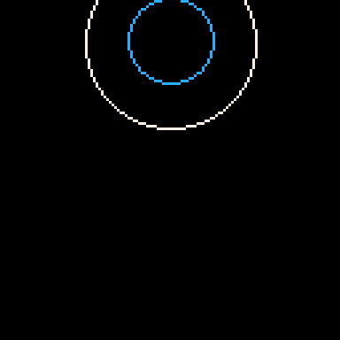
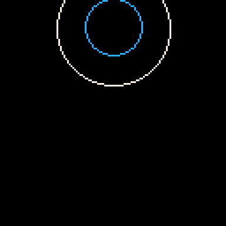
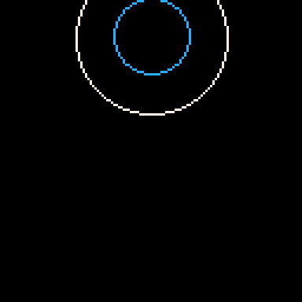

2024 -v-v-v-v-v-v-v-v-v-
 



Here you have my Pico-8 graphics experimentations. Just testing and breaking things to make some trippy graphics. If you haven't checked out this amazing fantasy console yet I highly reccomend it.
